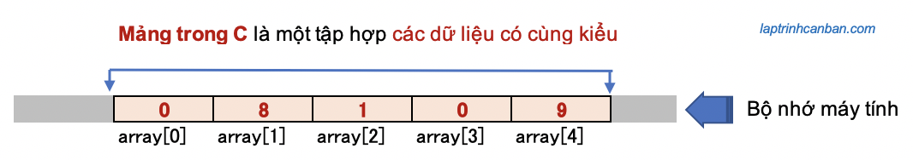
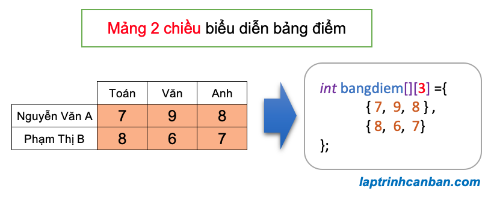
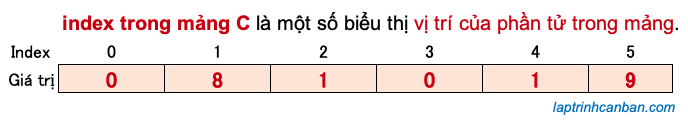

Bạn có đang sử dụng mảng trong C không? Mảng trong C, hay còn gọi là kiểu mảng trong C rất tiện lợi khi chúng ta cần xử lý một lượng lớn dữ liệu cùng loại. Hãy cùng tìm hiểu mảng trong C là gì, mảng trong c dùng để làm gì, cũng như các cách tạo mảng trong C như khởi tạo, khai báo và gán giá trị cho mảng trong C sau bài học này.
Mảng trong C là gì
Mảng trong C, hay còn gọi là kiểu mảng trong C là tập hợp các dữ liệu có cùng kiểu, và các dữ liệu chứa trong mảng được gọi là phần tử của mảng đó. Chúng ta không thể kết hợp các kiểu dữ liệu khác nhau trong cùng một mảng.

Mảng trong c dùng để lưu trữ các dữ liệu có cùng kiểu dữ liệu. Bằng việc sử dụng mảng, chúng ta không cần phải khai báo các dữ liệu có cùng kiểu nhiều lần, qua đó có thể viết code đơn giản và ngắn gọn hơn.
Mảng trong C được chia ra làm 2 loại, đó là mảng 1 chiều và mảng đa chiều. Trong đó chúng ta hay sử dụng loại mảng đa chiều nhiều nhất đó chính là mảng 2 chiều trong C.
Mảng 1 chiều và mảng 2 chiều
Mảng 1 chiều là gì
Trong ngôn ngữ C, mảng 1 chiều là kiểu mảng mà trong đó các phần tử được sắp xếp liên tục và có thứ tự trên bộ nhớ máy tính. Các phần tử trong mảng được đánh số thứ tự từ đầu mảng tới cuối mảng, bắt đầu từ số 0 và tăng dần 1 đơn vị. Chúng ta gọi số này là index (chỉ số) của phần tử, và mảng có n phần tử thì sẽ có index bắt đầu từ [0] tới [n – 1].
Ví dụ điển hình của mảng 1 chiều là một dãy số chỉ nhiệt độ hoặc điện áp được ghi lại theo thời gian.

Mỗi phần tử trong mảng 1 chiều sẽ được xác định thông qua index của nó. Ví dụ với mảng 1 chiều ở trên, phần tử [37.1] có index bằng 2, do đó nó được xác định thông qua index là [2].
Mảng 2 chiều là gì
Khác với mảng 1 chiều thì mảng 2 chiều là kiểu mảng chứa các mảng khác bên trong nó. Phần tử của mảng 2 chiều không được lưu giữ trực tiếp trong mảng 2 chiều, mà được lưu giữ thông qua các mảng 1 chiều bên trong mảng 2 chiều đó. Do cấu tạo mảng như vậy nên chúng ta mới gọi các mảng trong mảng như thế này là mảng 2 chiều.
Mỗi phần tử trong mảng 2 chiều cần được xác định bởi một cặp index (chỉ số) là [index dọc][index ngang], trong đó [index dọc] để xác vị trí của mảng 1 chiều chứa nó trong mảng 2 chiều, và [index ngang] để xác định vị trí của nó trong mảng 1 chiều chứa nó.
Ví dụ điển hình của mảng 2 chiều là bảng điểm dưới đây. Bảng điểm có 2 hàng tương ứng với số điểm của từng người, và trong mỗi hàng lại có 3 cột tương ứng với số điểm của từng môn. Khi biểu diễn bảng điểm thành mảng, mỗi một hàng trong bảng sẽ trở thành một mảng 1 chiều, và mỗi mảng 1 một chiều sẽ chứa tối đa 3 phần tử tương ứng với điểm số của từng môn như sau:

Để truy cập tới từng ô điểm trong bảng điểm, chúng ta cần biết ô đó thuộc hàng thứ mấy, và cột thứ mấy. Và khi chuyển bảng điểm thành mảng thì một cách tương tự, để truy cập tới các phần tử trong mảng 2 chiều, chúng ta cần biết phần tử đó thuộc mảng 1 chiều thứ bao nhiêu (tính từ trên xuống dưới), và vị trí của nó trong mảng 1 chiều đó (tính từ trái qua phải). Các vị trí này cũng được đánh số thứ tự tương tự như mảng 1 chiều, luôn bắt đầu bằng 0 và tăng dần 1 đơn vị.
Ví dụ, phần tử [9] thuộc mảng 1 chiều đầu tiên (index dọc bằng 0) và đứng thứ 2 trong mảng 1 chiều chứa nó (index ngang bằng 1). Do vậy, nó được xác định bởi cặp index là [0][1].
Mảng 2 chiều thường được sử dụng để biểu diễn và tính toán ma trận trong C. Ngoài ra, các dữ liệu như “hình ảnh” và “cơ sở dữ liệu” sử dụng trong chương trình C đều là các dữ liệu được sắp xếp theo định dạng hai chiều, và chúng ta cũng cần phải sử dụng mảng 2 chiều để biểu diễn chúng.
Sự khác biệt giữa mảng 1 chiều và mảng 2 chiều
Mảng 1 chiều và mảng 2 chiều trong C có một số điểm khác biệt như sau:
Mảng 1 chiều có phần tử là các giá trị được sắp xếp theo thứ tự, trong khi đó mảng 2 chiều lại chứa các mảng 1 chiều.
Để tương tác với phần tử trong mảng 1 chiều, chúng ta chỉ cần một index biểu diễn vị trí của phần tử đó trong mảng. Tuy nhiên với mảng 2 chiều thì chúng ta cần tới 2 index, một index dọc để biểu diễn vị trí của mảng 1 chiều chứa phần tử, và một index ngang để biểu diễn vị trí phần tử này trong mảng 1 chiều chứa nó.
Khi khởi tạo mảng 1 chiều, chúng ta có thể lược bỏ index. Khi khởi tạo mảng 2 chiều, chúng ta cũng có thể lược bỏ index đầu tiên sử dụng để chỉ định số mảng 1 chiều trong mảng 2 chiều, nhưng phải chỉ định giá trị của index thứ 2 sử dụng để chỉ định độ dài của các mảng 1 chiều trong mảng.
Mặc dù có sự phân định rõ ràng giữa mảng 1 chiều và mảng 2 chiều trong C, tuy nhiên do tần số sử dụng của mảng 2 chiều khá là ít so với mảng 1 chiều, nên thông thường chỉ khi nào cần sử dụng mảng 2 chiều thì chúng ta mới gọi rõ tên của loại mảng này, còn phần lớn trong các trường hợp, chúng ta hay coi mảng trong C chính là mảng 1 chiều.
Trong chuyên đề Lập trình C cơ bản dành cho người mới học lập trình này, trừ những trường hợp cần chỉ định rõ thì Kiyoshi cũng mạn phép coi mảng trong C chính là mảng 1 chiều. Khi nói đến mảng trong C mà không đề cập gì thêm, bạn hãy hiểu là chúng ta đang nói về mảng 1 chiều nhé.
Khởi tạo mảng trong C
Như đã phân tích ở trên thì thông thường khi nói đến mảng trong C, chúng ta sẽ ngầm hiểu là đang nói về mảng 1 chiều. Chỉ trong các trường hợp cần sử dụng tới mảng 2 chiều thì chúng ta mới nói rõ loại mảng mà thôi.
Để khởi tạo mảng trong C, nói chính xác là khởi tạo mảng 1 chiều trong C, chúng ta viết các phần tử của mảng cách nhau bởi dấu phẩy vào giữa cặp dấu ngoặc nhọn {} với cú pháp khởi tạo mảng như sau:
type name[length] = {value1, value2, value3,..};
Trong đó type là kiểu dữ liệu, name là tên mảng, length là số phần tử của mảng, và các value là giá trị của các phần tử của mảng.
Khi tạo mảng bằng cách khởi tạo mảng trong C, chúng ta có thể lược bỏ đi đối số length. Khi đó giá trị của length sẽ được tự động tính toán và bằng với chính độ dài của mảng. Khi đó cú pháp khởi tạo mảng rút gọn sẽ như sau:
type name[] = {value1, value2, value3,..};
Lại nữa, chúng ta cũng có thể lược bỏ đi các giá trị value của một, một số hoặc toàn bộ phần tử khi khởi tạo mảng trong C. Khi đó, phần tử không được gán giá trị sẽ được tự động gán giá trị mặc định là NULL.
Lưu ý giá trị NULL trong C nếu ở dạng char thì là ký tự kết thúc chuỗi \0 biểu diễn bằng khoảng trắng, và nếu ở dạng int thì là số 0. Tuy nhiên về bản chất thì NULL có nghĩa là ký tự rỗng có nghĩa là không tồn tại giá trị.
Ví dụ cụ thể, chúng ta tạo 1 mảng trong C như sau:
int int_arr[] = {4,5,6,7,9}; |
Hoặc là chúng ta lược bỏ đi một, một số hoặc toàn bộ các giá trị value khi tạo 1 mảng trong C như sau:
int int_arr1[6] = {}; // [0, 0 ,0 ,0 ,0 ,0 ,0] |
Lưu ý là khi khai báo mảng chuỗi trong C, chúng ta cần phải ghi ký tự kết thúc chuỗi \0 vào cuối mảng. Đây là điều bắt buộc, do chuỗi trong C cần phải được kết thúc bởi ký tự này.
Lại nữa, khi khai báo mảng chuỗi trong C, chúng ta cũng có thể dùng cách viết khác như dưới đây:
char char_arr[] = "abcd"; |
Cách viết này cũng tương tự với cách khởi tạo mảng char char_arr[] = {'a','b','c','d','\0'}; ở trên.
Khai báo mảng trong C
Điểm khác biệt giữa khai báo mảng và khởi tạo mảng trong C đó chính là, khởi tạo mảng sẽ gán ngay giá trị ban đầu của các phần tử vào mảng, trong khi với khai báo mảng, chúng ta sẽ không gán giá trị ban đầu vào mảng, mà chỉ khai báo kiểu, tên và độ dài của mảng mà thôi.
Để khai báo một mảng trong C, hãy đặt kiểu dữ liệu trước tên mảng. Sau đó đặt số phần tử vào trong cặp dấu [] với cú pháp khai báo mảng như sau:
type name[length];
Trong đó type là kiểu dữ liệu, name là tên mảng, và length chính là số phần tử của mảng. Lưu ý là khi khởi tạo mảng chúng ta có thể lược bỏ đi length nhưng khi tạo mảng trong C bằng phương pháp khai báo mảng thì chúng ta bắt buộc phải chỉ định length - số phần tử của mảng, để chương trình có thể tạo ra vùng có kích thước tương đương để lưu mảng trong bộ nhớ máy tính.
Ví dụ cụ thể, chúng ta tạo mảng bằng cách khai báo mảng ký tự trong C , mảng số trong C như sau:
int int_arr[10]; |
Gán giá trị cho mảng trong C
Sau khi tạo mảng trong C bằng một trong hai cách khởi tạo hoặc khai báo mảng ở trên, chúng ta có thể gán giá trị mới cho mảng đó, bằng cách truy cập vào từng phần tử trong mảng và gán giá trị cho phần tử đó, thông qua index của phần tử đó trong mảng.
Ở đây, index có thể hiểu là vị trí của phần tử đó trong mảng ban đầu. Trong ngôn ngữ C thì index được tính từ đầu mảng (bên trái), bắt đầu bởi số 0 và tăng dẫn 1 đơn vị về cuối mảng.

Bằng cách sử dụng index - vị trí của phần tử trong chuỗi, chúng ta có thể truy cập và gán giá trị cho phần tử đó, với cú pháp sau đây:
name[index] = value;
Trong đó name là tên mảng, index là vị trí phần tử cần gán giá trị, và value là giá trị cần gán. Lưu ý là không phụ thuộc vào việc phần tử có giá trị ban đầu hay không, thì giá trị value chỉ định sẽ ghi đè và thay thế giá trị ban đầu của phần tử.
Ví dụ cụ thể, chúng ta khai báo một mảng, sau đó gán giá trị vào mảng đó trong C như sau:
|
Hoặc là chúng ta cũng có thể khởi tạo mảng với giá trị ban đầu, sau đó truy cập phần tử và ghi đè giá trị bằng cách gán giá trị mới cho nó như sau:
|
Bạn có thể thấy các giá trị ban đầu là 1,2,3,4 đã bị ghi đè thành các giá trị mới là 2,0,2,1 rồi.
Lại nữa, trong trường hợp chúng ta muốn gán cùng một giá trị cho các phần tử trong mảng, hoặc là khi số phần tử trong mảng quá nhiều và không thể gán theo cách thủ công như trên, thì chúng ta cũng có thể sử dụng tới vòng lặp for để gán giá trị cho mảng trong C.
Ví dụ, chúng ta có thể gán một dãy số tăng dần bắt đầu từ số 2 vào một mảng sau khi khai báo như sau:
|
Ứng dụng cách này, chúng ta cũng có thể nhập dữ liệu cho mảng 1 chiều trong C như sau:
|
Kết quả chương trình:
Nhap so phan tu trong day so can tao: 4 |
Tổng kết
Trên đây Kiyoshi đã hướng dẫn các bạn về mảng trong C là gì, cũng như cách khởi tạo, khai báo và gán mảng trong C rồi. Để nắm rõ nội dung bài học hơn, bạn hãy thực hành viết lại các ví dụ của ngày hôm nay nhé.
Và hãy cùng tìm hiểu những kiến thức sâu hơn về C trong các bài học tiếp theo.
HOME>> lập trình c cơ bản dành cho người mới học lập trình>>14. mảng trong c